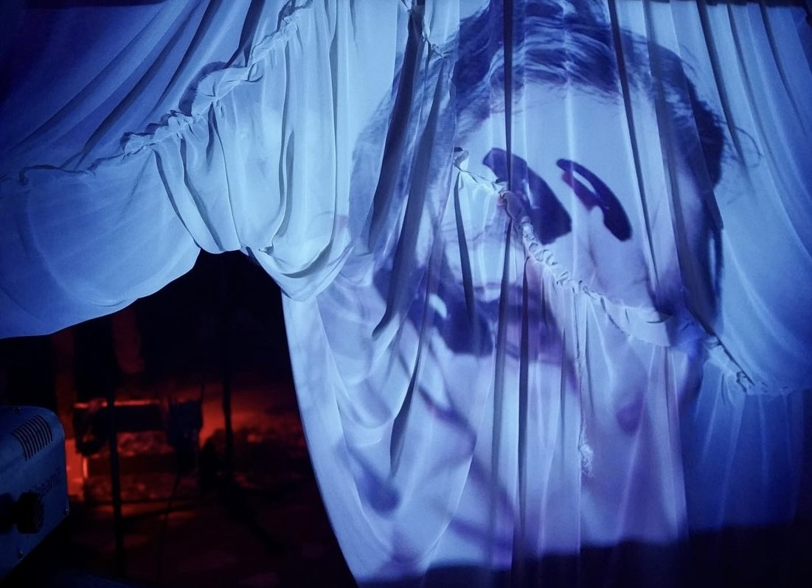

Music video, 2024 Video to my current music project Nikoko. The sound are generated with digital synthesizers. I had thought of heals, nails, jewelry, handbags, tapping on plastic and glass surfaces as when generating the sounds. Julija Zaharijevic performing, thank you Julija

installed at TLC23